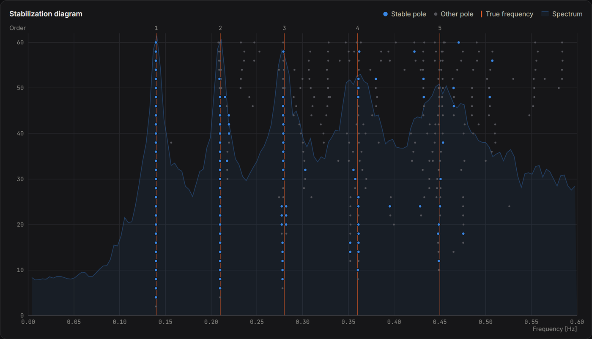
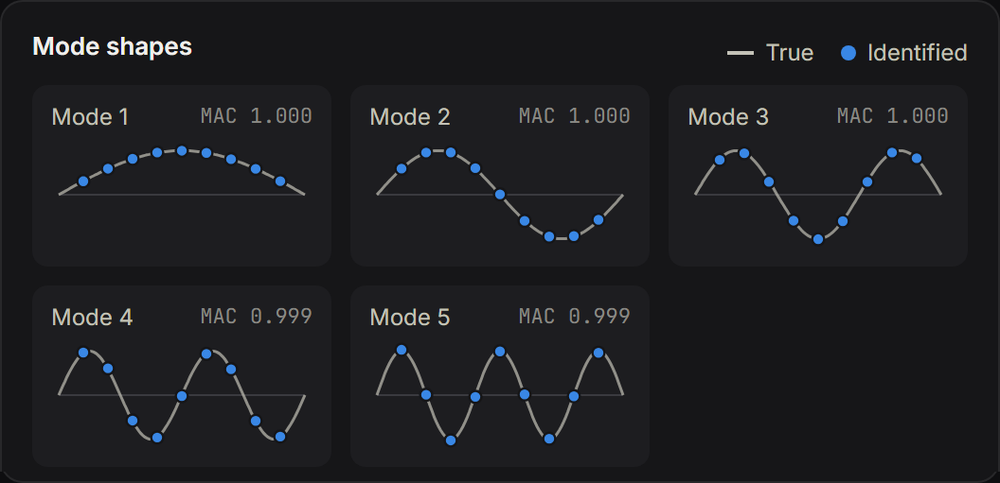
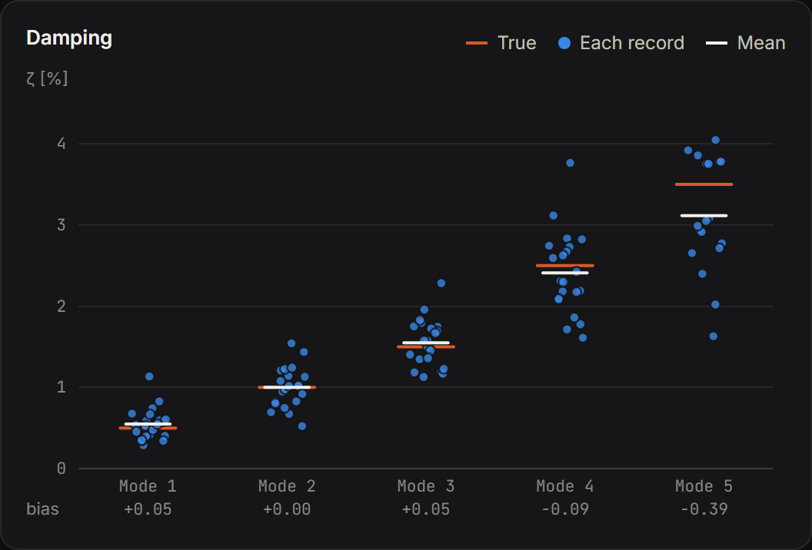
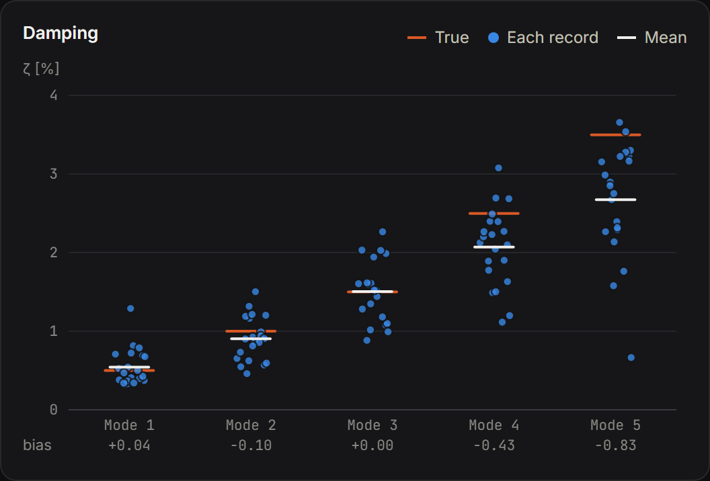

SSI-cov Playground
Stochastic subspace identification running in the browser, on a simulated girder with known modes.
An interactive version of the identification method from my Hardanger Bridge analysis. You choose the modes (frequency and damping), the number of sensors, the noise, the record length and the SSI settings. The page simulates the accelerations, identifies the modes with covariance-driven SSI and automatic mode picking, and compares the result with the true values. The computation is Python and NumPy, run in the browser with Pyodide. The plots are written directly in SVG, without a chart library.
- Stabilization diagram, mode shapes, and a table of identified against true frequency, damping and MAC. One record takes about half a second.
- Running 20 records with the same settings shows the bias of the damping estimate. For the mode with 3.5 % damping, the mean error over the same 21 records was −0.39 %-points with 30 block rows and −0.83 with 120.
- The bias shrinks with longer records (from −1.2 to −0.2 %-points between 30 and 180 minutes, at 120 block rows), so it is a finite-record effect. It is the same bias I had to correct in the Hardanger damping estimates.
- Each mode is simulated exactly in discrete time, so the true frequency and damping are known exactly. Tests check the identification against them.
Tools
Figures




Method: Peeters, B. & De Roeck, G. (1999). Reference-based stochastic subspace identification for output-only modal analysis. Mechanical Systems and Signal Processing, 13(6), 855–878.